Mercedes-Benz
Schülerpraktikum 2026
Lara Hoffmann • Orianienschule Wiesbaden • Klasse 9
9. März – 20. März 2026 • IT-Abteilung Stuttgart
Künstliche Intelligenz & die Zukunft der Mobilität
Entdecken ↓Über Mercedes-Benz
Eine Legende der Automobilgeschichte
Mercedes-Benz ist ein sehr großes internationales Unternehmen mit rund 164.000 Mitarbeitern weltweit. Der Hauptsitz ist in Stuttgart. Das Unternehmen gehört zur Automobilbranche und stellt Autos, Vans und Luxusmodelle wie AMG oder Maybach her. Es ist eine Aktiengesellschaft (AG), das heißt, Teile des Unternehmens werden als Aktien an der Börse gehandelt.
Die Geschichte von Mercedes-Benz ist besonders spannend: 1886 erfand Carl Benz das erste Auto, später fusionierte seine Firma 1926 mit der von Gottlieb Daimler zur Daimler-Benz AG. Seitdem ist Mercedes-Benz weltweit bekannt.
Das Unternehmen ist sehr innovativ: Es arbeitet an Elektroautos, selbstfahrenden Autos und künstlicher Intelligenz, die zum Beispiel hilft, Daten auszuwerten oder Prozesse schneller zu machen.
Bei Mercedes-Benz arbeiten viele verschiedene Menschen: Ingenieure, Programmierer, IT-Fachleute, Mechatroniker, Designer, Kaufleute, Manager und Projektleiter. Sie arbeiten in Abteilungen wie Entwicklung, Produktion, IT, Marketing, Verwaltung, Finanzen und Personal. Jede Abteilung hat eigene Aufgaben, aber alle arbeiten zusammen, damit das Unternehmen erfolgreich ist.
Die Hierarchie ist klar geregelt: Ganz unten stehen die normalen Mitarbeiter, dann kommen Gruppenleiter, Teamleiter, Abteilungsleiter und Bereichsleiter. An der Spitze steht der Vorstand, der die wichtigsten Entscheidungen trifft und die Strategie des Unternehmens bestimmt.
Spannend sind auch die Standorte: In Sindelfingen werden Luxusautos wie die S-Klasse gebaut, in Düsseldorf die Vans (Sprinter), und in Rastatt die Kompaktwagen.
Carl Benz – Der Erfinder des Automobils
Carl Benz gilt als der Erfinder des ersten Automobils. Mit seinem Patent-Motorwagen Nr. 1 legte er 1886 den Grundstein für die gesamte Automobilindustrie. Ohne ihn würde es heute keine Autos geben!

Der Benz Patent-Motorwagen Nr. 1 – das erste Automobil der Welt (1886)
Gründung 1926
Mercedes-Benz wurde 1926 gegründet, als die Daimler-Motoren-Gesellschaft und Benz & Cie. fusionierten. Seitdem steht der Name Mercedes-Benz für Luxus, Qualität und Innovation.
Pionier des Airbags
Mercedes-Benz brachte 1981 als erster europäischer Hersteller den Fahrer-Airbag zusammen mit dem Gurtstraffer in die Serienproduktion. Damit haben sie die Sicherheit im Straßenverkehr revolutionär verbessert und unzählige Leben gerettet.
Luxus, Qualität & Fahrkomfort
Mercedes-Benz legt großen Wert auf Luxus, Qualität und Fahrkomfort. Jedes Fahrzeug wird mit höchster Präzision gefertigt – das spürt man bei jeder Fahrt.
🚗 Luxusmodelle hautnah
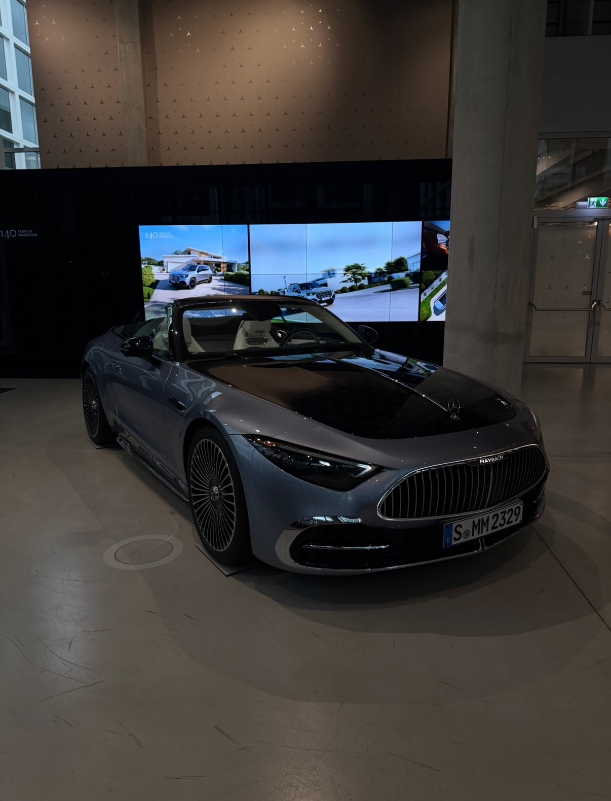
Mercedes-Maybach Cabrio in der Zentrale
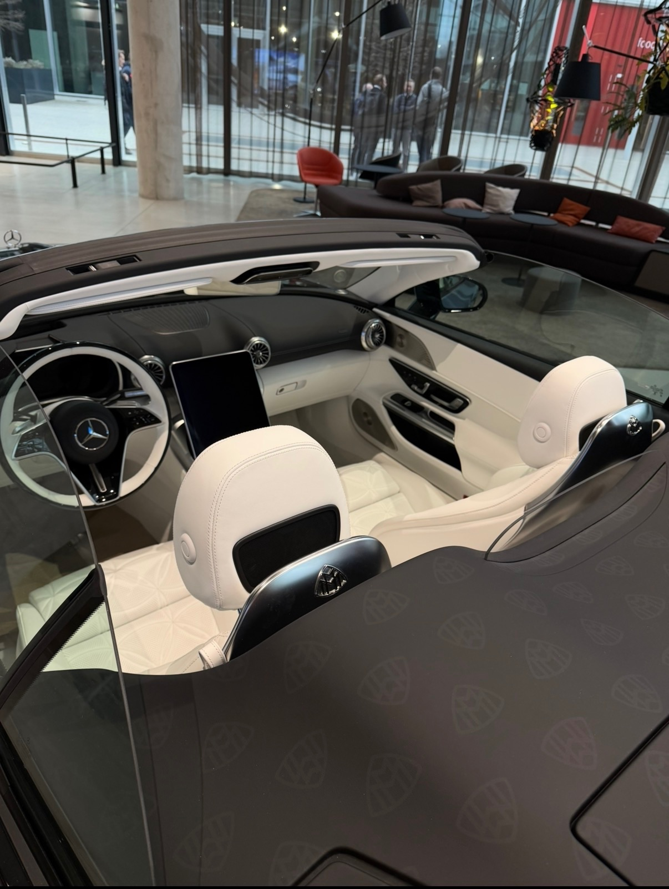
Luxuriöses Interieur des Maybach
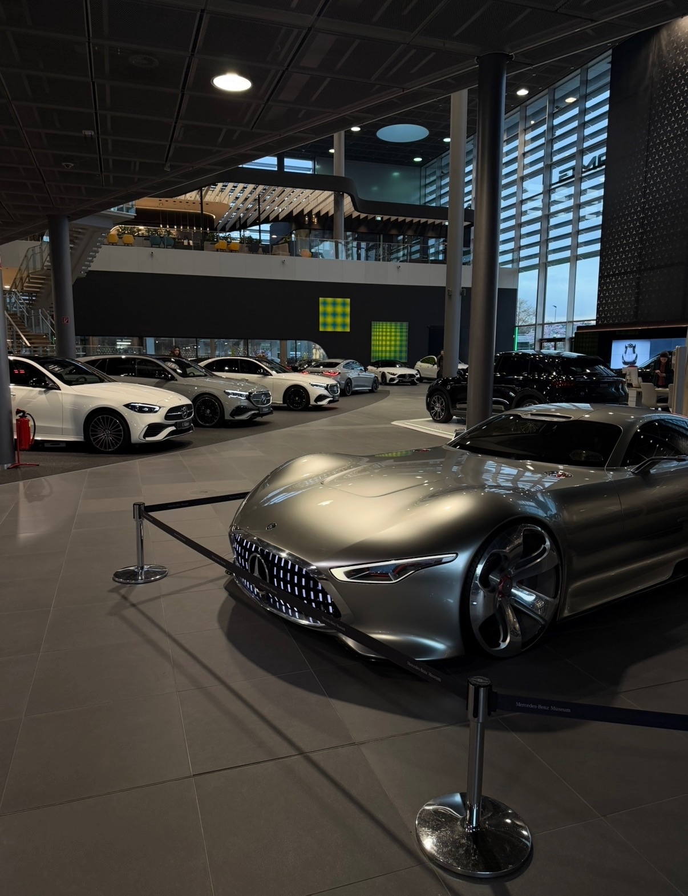
AMG Vision Gran Turismo im Showroom
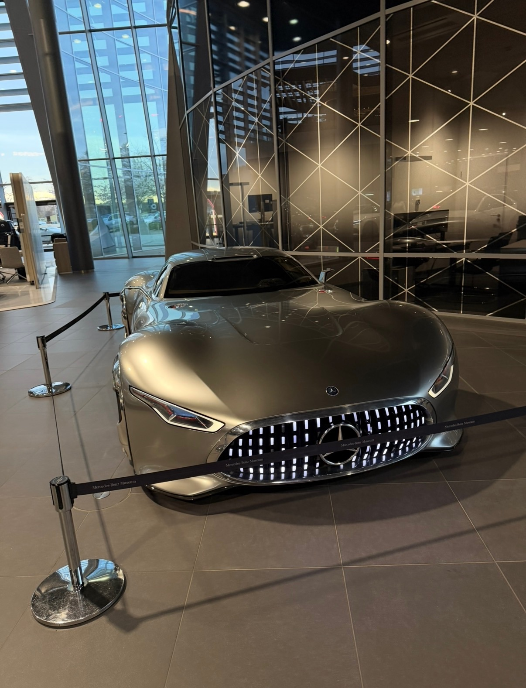
AMG Vision GT – Frontansicht
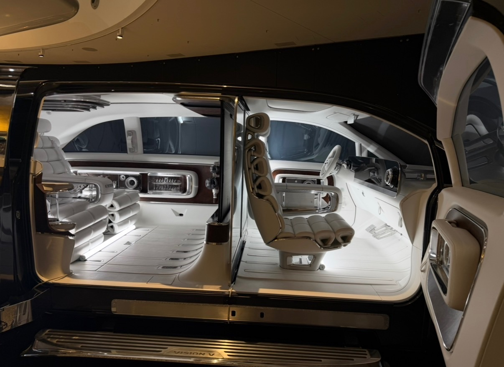
Vision V – Futuristisches Interieur
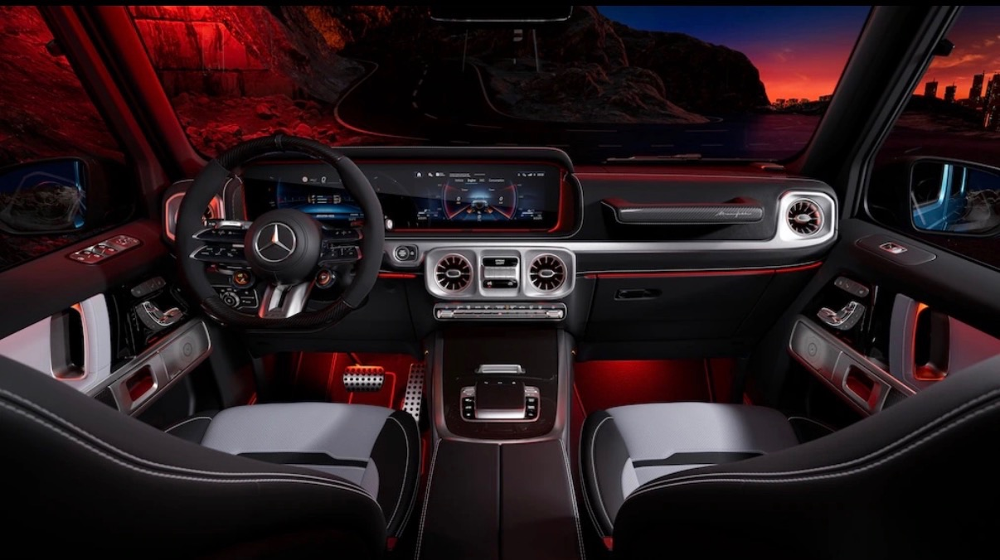
G-Klasse AMG Cockpit
Das Mercedes-Benz Museum
Bereits 1936 richtete Daimler-Benz eines der ersten Automobilmuseen der Welt ein. Der Neubau 2006 hat rund 150 Millionen Euro gekostet – und da sind die wertvollen Autos drinnen noch nicht mal mitgezählt!
135 Millionen für ein Auto
Ein Mercedes-Benz 300 SLR Uhlenhaut Coupé wurde 2022 für unglaubliche 135 Millionen Euro versteigert – das teuerste Auto der Welt! Es gibt dieses Modell nur 2 Mal auf der ganzen Welt.
Schutz durch Tornado
Im Museum erzeugen 144 Luftöffnungen den stärksten künstlichen Tornado der Welt (Guinness-Rekord!). Er saugt im Brandfall den Rauch aus dem offenen Gebäude ab – damit die wertvollen Autos geschützt bleiben!
Mercedes-Benz in Stuttgart
Das Herz von Mercedes-Benz schlägt in Stuttgart
Hauptsitz Untertürkheim
Die Konzernzentrale der Mercedes-Benz Group AG befindet sich in Stuttgart-Untertürkheim. Von hier aus wird das weltweite Geschäft gesteuert.
Werk Sindelfingen
Eines der größten und modernsten Automobilwerke der Welt. Hier werden die Luxusmodelle wie die S-Klasse und der EQS gefertigt.
Mercedes-Benz Museum
Das Museum in Stuttgart-Bad Cannstatt zeigt auf 16.500 m² die gesamte Automobilgeschichte – von 1886 bis heute. Über 160 Fahrzeuge sind ausgestellt.
IT & KI-Abteilung
In der IT-Abteilung wird an der Zukunft gearbeitet: Künstliche Intelligenz, autonomes Fahren und digitale Services. Hier durfte ich mein Praktikum machen!
Mein Praktikum
9. März – 20. März 2026 • IT-Abteilung Stuttgart
Lara Hoffmann
Orianienschule Wiesbaden • Klasse 9
🎯 Meine Erwartungen vor dem Praktikum
Vor meinem Praktikum bei Mercedes-Benz in Stuttgart hatte ich einige Erwartungen. Ich wollte vor allem sehen, wie es ist, in einem großen Unternehmen zu arbeiten, und den Alltag der Mitarbeiter kennenlernen.
Besonders interessiert hat mich die IT-Abteilung. Dort wollte ich beobachten, was Programmierer machen und welche Aufgaben sie haben. Ich hoffte auch, ein paar Programme und Abläufe kennenzulernen und vielleicht selbst kleine Aufgaben am Computer zu machen.
Da ich mich für künstliche Intelligenz interessiere, wollte ich gerne mehr darüber erfahren und sehen, wie sie im Unternehmen genutzt wird. Außerdem wollte ich herausfinden, ob ein Beruf in der IT oder Programmierung später etwas für mich sein könnte.
🔍 Meine Problemfrage
Braucht die Automobilindustrie in Zukunft noch genauso viele Mitarbeiter, wenn immer mehr Aufgaben von Künstlicher Intelligenz übernommen werden? (z.B. bei der Mercedes-Benz Group)
🏛️ Mercedes-Benz Campus Stuttgart
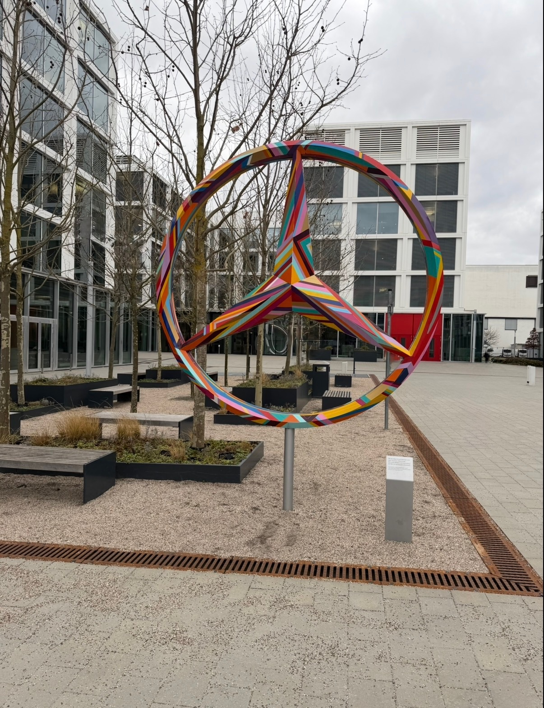
Kunstvoller Mercedes-Stern auf dem Campus
Die moderne Zentrale in Stuttgart
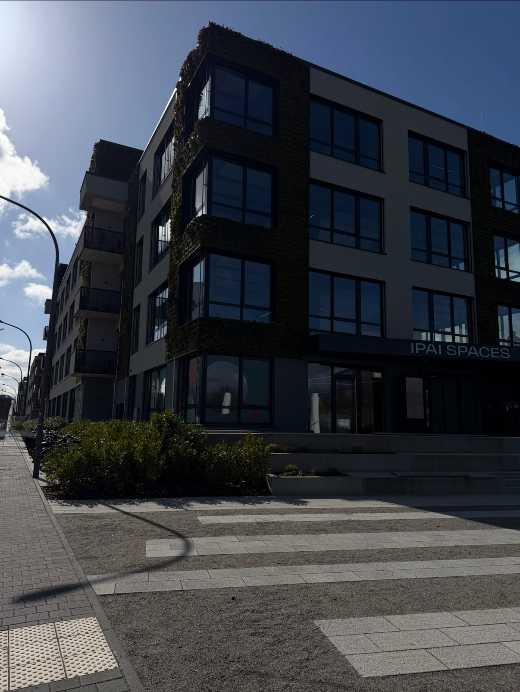
IPAI Spaces – Innovation und KI
💻 Tag 2 – IT-Abteilung & Künstliche Intelligenz
Am zweiten Tag begann mein Arbeitstag um 7:00 Uhr und endete um 18:00 Uhr. Ich habe eine neue Gruppe von Mitarbeitern kennengelernt, die mir ihre aktuellen Projekte gezeigt haben.
Ich durfte bei mehreren Meetings dabei sein. In einem Meeting ging es um finanzielle Fragen und darum, wie neue KI-Technologien im Unternehmen eingesetzt werden können. Es wurde diskutiert, ob ein bestimmtes KI-Modul sinnvoll ist und ob es in Zukunft Zeit und Kosten sparen kann.
Später habe ich mit einem Mitarbeiter gearbeitet, der mir erklärt hat, wie ein System programmiert wurde und welche Tools dafür genutzt werden. So habe ich einen besseren Einblick in die Programmierung im Arbeitsalltag bekommen.
Besonders interessant fand ich zu verstehen, wie künstliche Intelligenz im Hintergrund funktioniert. Ich habe gelernt, dass sie mit vielen Daten trainiert wird und dadurch Aufgaben automatisch erledigen kann. Außerdem habe ich den Unterschied zwischen einem Sprachmodell und einem KI-Agenten kennengelernt.
Als ich dann selbst eine kleine KI programmieren durfte, hat sich bestätigt, dass mir die Aufgaben in diesem Bereich liegen und gut zu mir passen. Außerdem habe ich mit den Mitarbeitern Ideen gesammelt, wie man anderen zeigen kann, dass die KI zuverlässig ist, und dazu sogar einen kleinen Vortrag gehalten.
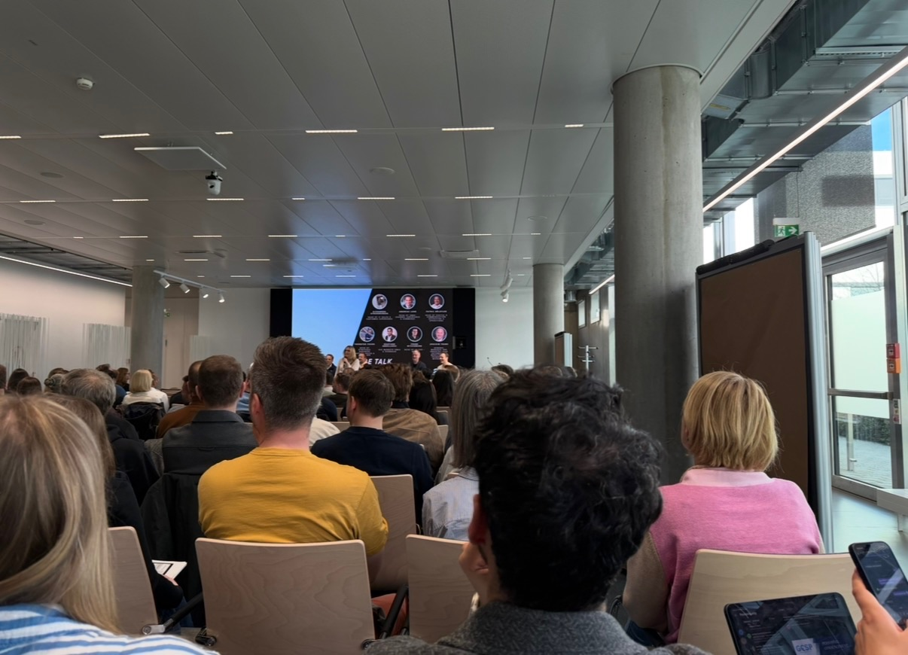
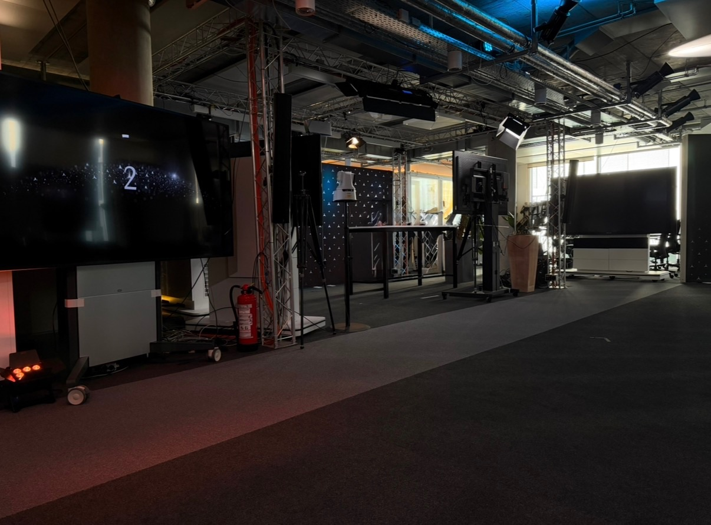
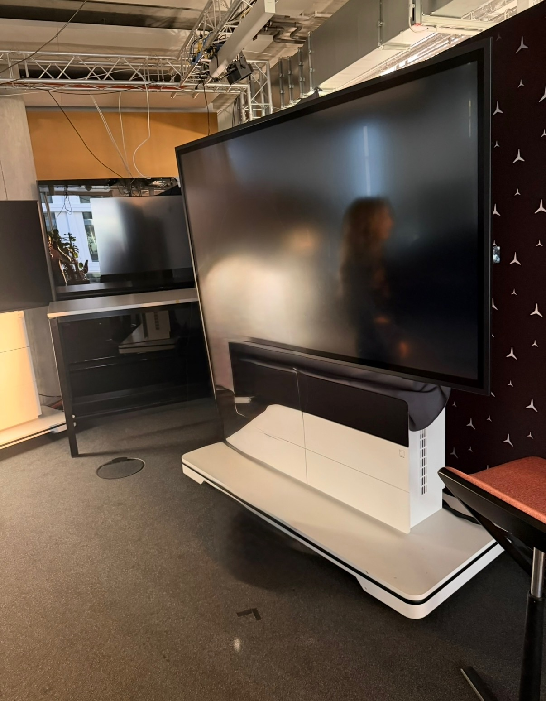
⚙️ Tag 3 – Werk Untertürkheim
Am dritten Tag war ich im Werk von Mercedes-Benz in Untertürkheim. Meine Arbeitszeit war von 07:00 bis 15:15 Uhr. Der Tag war sehr spannend und abwechslungsreich.
Am Anfang habe ich an einer Sicherheitsschulung teilgenommen. Dort wurde uns genau erklärt, wie wichtig Sicherheit in einer großen Fabrik ist und wie schnell Unfälle passieren können. Mir ist dabei klar geworden, dass schon kleine Fehler große Folgen haben können.
Danach durfte ich auch in die Fabrik und konnte live sehen, wie Autos hergestellt werden. Das war für mich ein echtes Highlight, weil ich so einen Einblick noch nie hatte. Es war spannend zu sehen, wie viele Schritte nötig sind, bis ein Auto fertig ist.
Außerdem gab es verschiedene Stationen zum Üben, zum Beispiel einen Gabelstapler-Simulator und eine VR-Brille. Mit der VR-Brille konnte man Fehler an einem Arbeitsplatz erkennen und verstehen, warum diese gefährlich sind.
Am Ende durfte ich noch kurz beim Vorstand vorbeischauen und habe sogar kurz mit Ola Källenius, dem Vorstandsvorsitzenden, gesprochen. Das war eine besondere Erfahrung für mich.
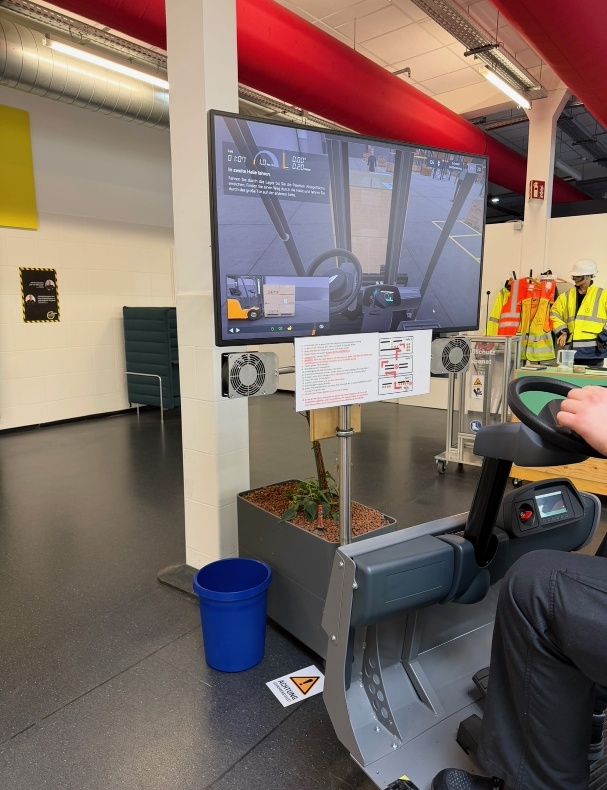
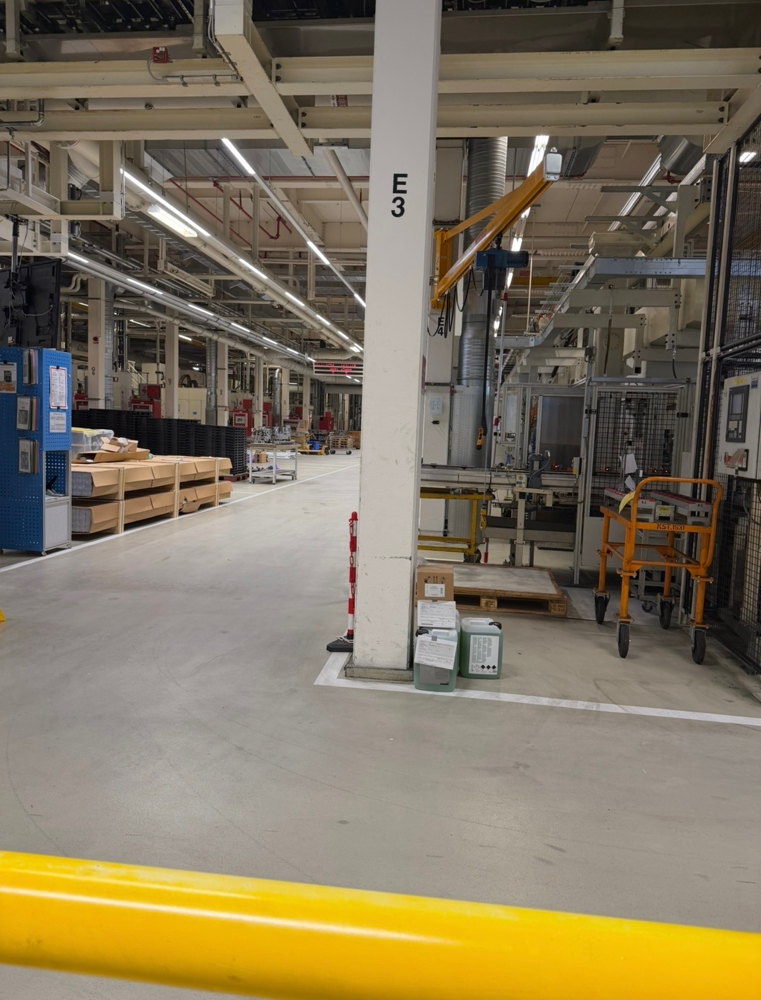
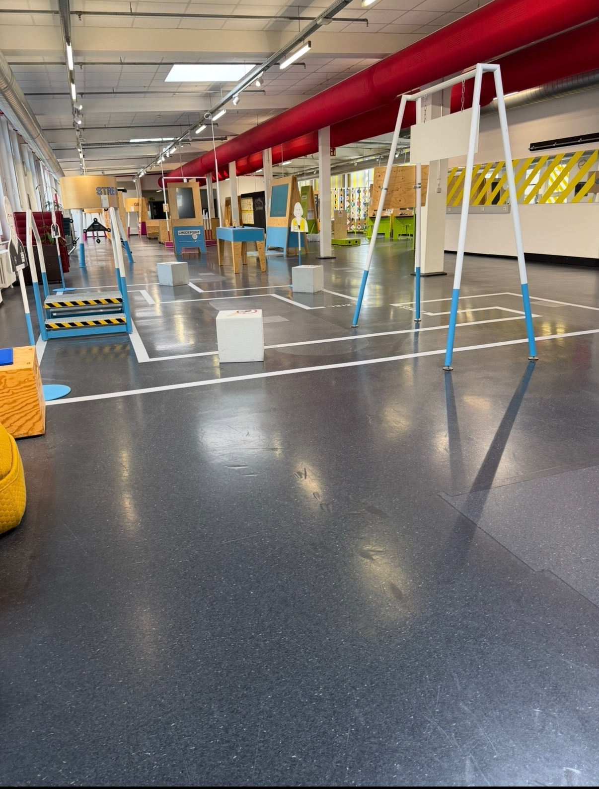
💡 Was habe ich gelernt?
Ich habe gelernt, wie KI mit vielen Daten trainiert wird und Aufgaben automatisch erledigen kann. Außerdem kenne ich jetzt den Unterschied zwischen einem Sprachmodell und einem KI-Agenten. Im Werk habe ich gesehen, wie wichtig Sicherheit und Teamarbeit in der Produktion sind.
⭐ Wie fand ich es?
Ich hatte schon vorher das Gefühl, dass mir die Aufgaben in der IT gut liegen – und das hat sich voll bestätigt! Besonders toll war es, selbst eine kleine KI zu programmieren und einen Vortrag zu halten. Der Besuch im Werk war ein echtes Highlight. Insgesamt war es super lehrreich und spannend!
Quiz
Teste dein Wissen über Mercedes-Benz und KI!
Abschluss
Danke fürs Anschauen meiner Praktikums-Website!
💬 Frag mich was!
Hast du Fragen zu meinem Praktikum? Stell sie hier!